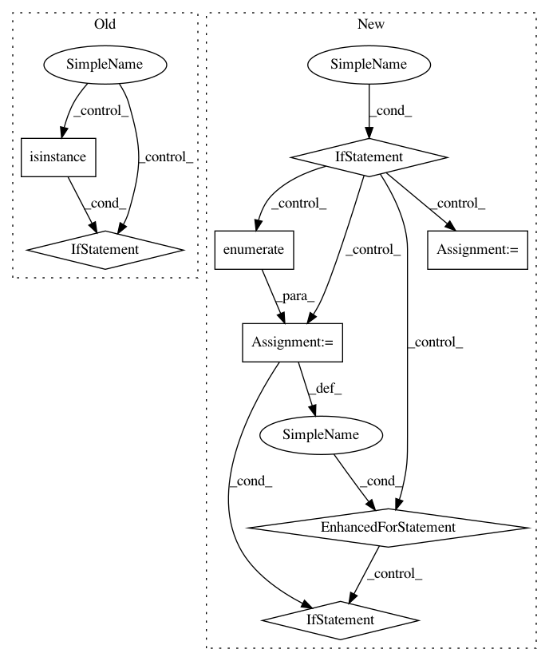

dc357b0e9d2bc40633f738997e8b7d17221c28fd,pyannote/audio/util.py,,from_numpy,#Any#Any#Any#,115
Before Change
msg = "`y` must be a binary array (i.e. full of zeros and ones)."
raise ValueError(msg)
if isinstance(window, SlidingWindowFeature):
window = window.sliding_window
N, K = y.shape
if labels is None:
labels = string_generator()
After Change
window = precomputed.sliding_window()
if len(y.shape) < 2:
N, = y.shape
K = np.max(y)
y_ = np.zeros((N, K), dtype=np.int8)
for t, k in enumerate(y):
if k == 0:
continue
y_[t, k - 1] = 1
y = y_
N, K = y.shape
if labels is None:
labels = string_generator()
In pattern: SUPERPATTERN
Frequency: 3
Non-data size: 8
Instances
Project Name: pyannote/pyannote-audio
Commit Name: dc357b0e9d2bc40633f738997e8b7d17221c28fd
Time: 2018-06-29
Author: bredin@limsi.fr
File Name: pyannote/audio/util.py
Class Name:
Method Name: from_numpy
Project Name: Microsoft/nni
Commit Name: 10d7ece1c34c5533262a54d20d974a3d04f0b7ce
Time: 2020-09-15
Author: 40699903+liuzhe-lz@users.noreply.github.com
File Name: src/sdk/pynni/nni/compression/tensorflow/compressor.py
Class Name:
Method Name: _instrument_model
Project Name: tensorflow/tensorboard
Commit Name: 005be3f794c134d26fc9adb98c4dffcbccd33f89
Time: 2019-05-10
Author: jameswex@users.noreply.github.com
File Name: tensorboard/plugins/interactive_inference/witwidget/notebook/visualization.py
Class Name: WitConfigBuilder
Method Name: _convert_json_to_tf_examples